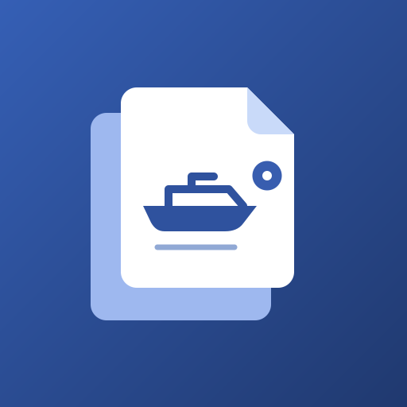
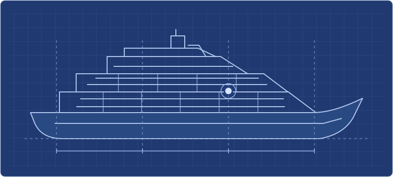

SHAREWORKPiani nave condivisi
Consulta i ponti e ritrova le annotazioni sulla tavola. L’accesso e le modifiche dipendono dai permessi del progetto.


SHAREWORKConsulta i ponti e ritrova le annotazioni sulla tavola. L’accesso e le modifiche dipendono dai permessi del progetto.

Il tuo account è in attesa di approvazione.
SPAZIO CONDIVISO
IMPOSTAZIONI PROGETTO